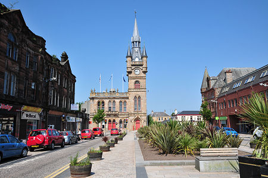
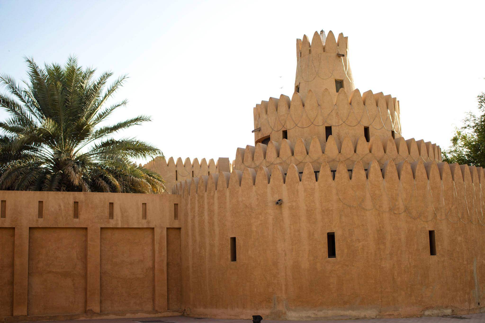
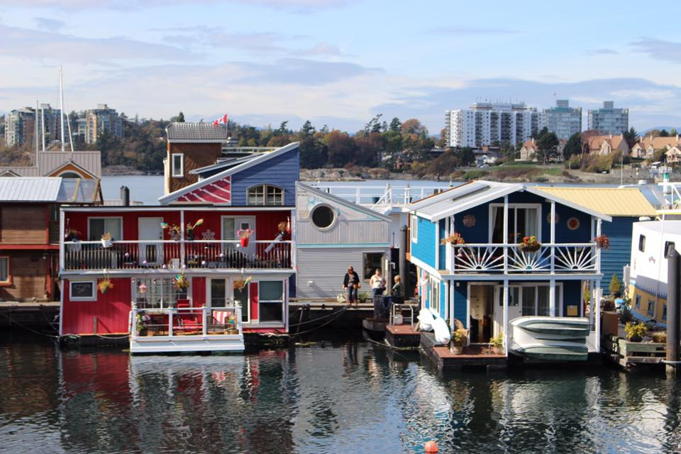
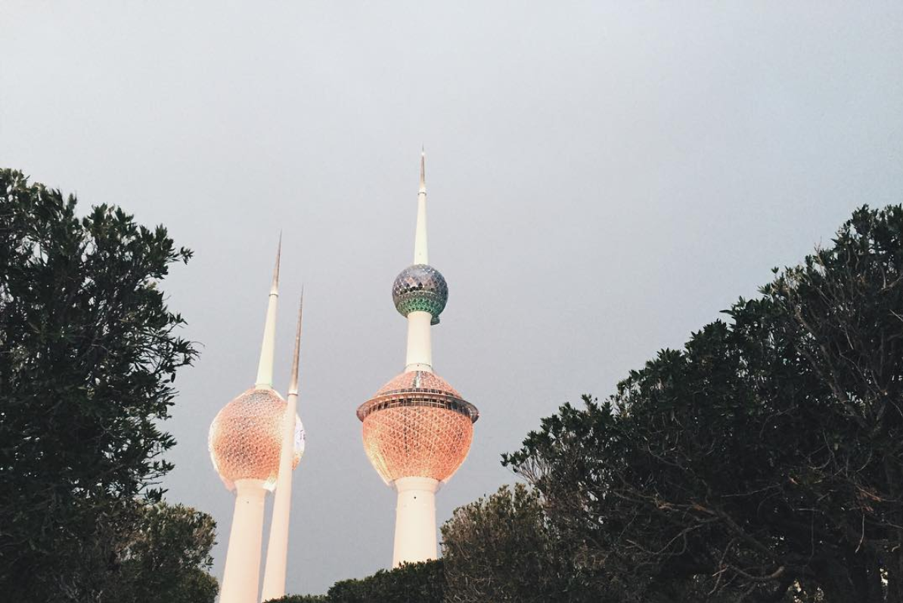

We moved to Renfrew, Scotland in July this year. It's great being back in Scotland and being close to my family and friends.
(My family lives in Paisley.)
I like living close to the River Clyde as it's really pretty for walks and I love that Braehead Shopping Centre and Soar are right across the road.
We lived in a town called Al Ain, in the United Arab Emirates for two years. Al Ain is land-locked and is 90 minutes away from both Dubai and Abu Dhabi. In Arabic, Al Ain means "The Spring".
The only thing I miss about living there is ladies' night at Trader Vic's - free prosecco all night every Wednesday!
We lived in Victoria, British Columbia, in Canada for a year. We lived in a hipster little
community called Fernwood and while I was there I took art courses at Vancouver Island School of Art. Click here to see some of my drawings and paintings!
It was nice to live close to my husband's family for a year.
I lived in Kuwait for seven years. In my spare
time I took part in amateur musical theatre - Kuwait is a dry country so you have to do something to fill your time!
I also learned to make wine and beer in my bathroom! Kuwait was my favourite place to live because of the tight expat community.